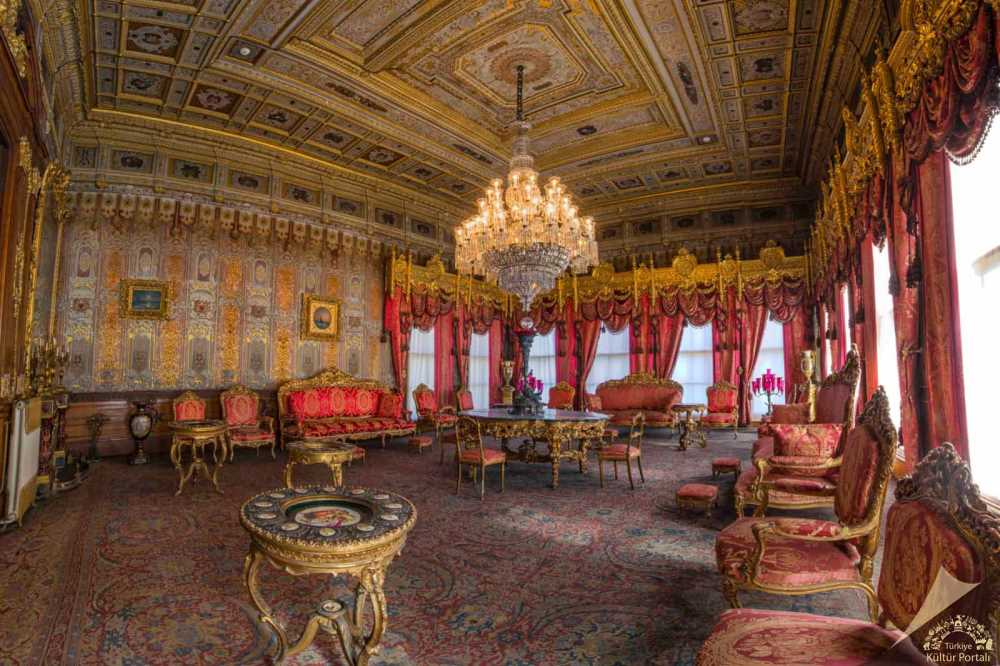
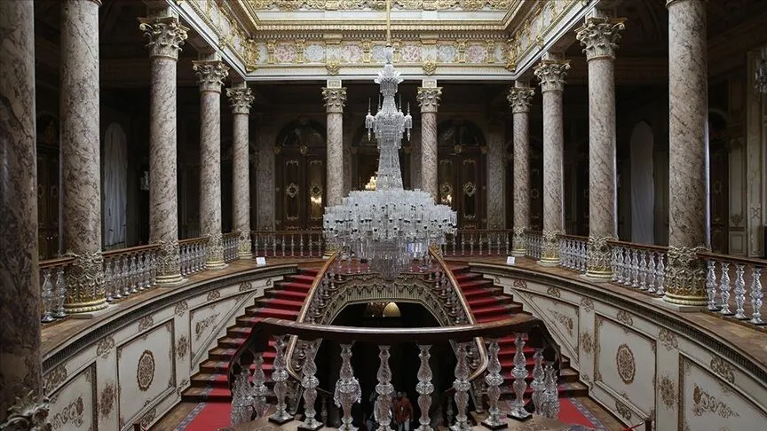
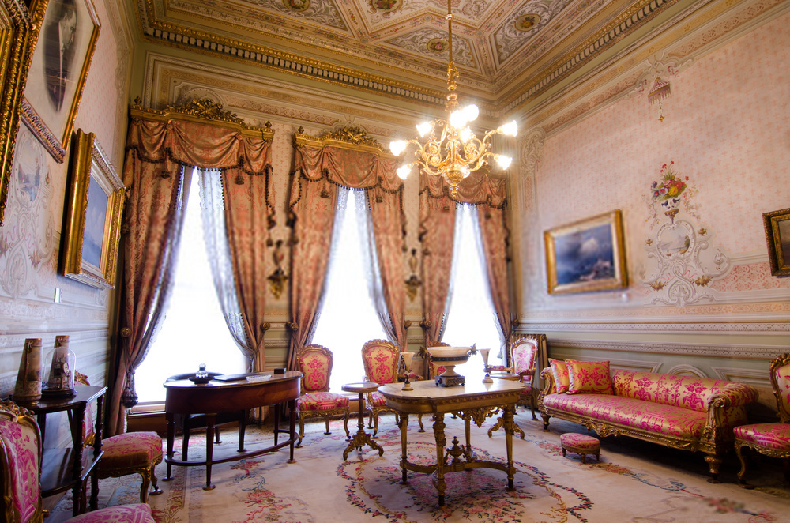
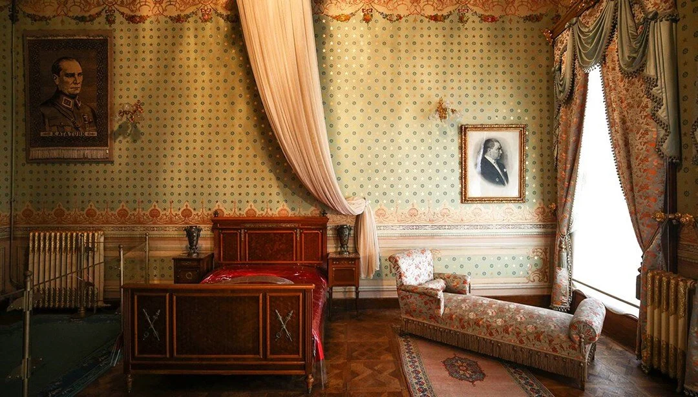

Tarihçe
İstanbul - Dolmabahçe Sarayı
 17. yüzyıla kadar Boğaziçi’nin koylarından biri olan bu yörenin; Altın Post'u aramaya çıkan Argonotların efsanevi gemisi Argos’un demirlediği, Fatih Sultan Mehmed’in İstanbul’u fethi sırasında Haliç’e indirmek üzere gemilerini karaya çıkardığı yer olduğu ileri sürülür.
Osmanlılar Döneminde kaptan paşaların donanmayı demirledikleri, geleneksel denizcilik törenlerinin yapılageldiği doğal bir liman görünümünde olan bu koy; 17. yüzyıldan başlayarak dönem dönem doldurulmuş ve Dolmabahçe adıyla padişahların Boğaziçi’ndeki has bahçelerinden biri konumuna getirilmiştir.
Tarihsel süreç içinde çeşitli padişahlar tarafından yaptırılan köşk ve kasırlarla donatılan Dolmabahçe; zamanla "Beşiktaş Sahil Sarayı" adıyla anılan bir saray görünümü kazanmıştır.
Beşiktaş Sahil Sarayı, Sultan Abdülmecid Döneminde (1839-1861) ahşap ve kullanışsız olduğu gerekçesiyle 1843 yılından başlayarak yıktırılmış ve aynı yerde günümüze dek gelen Dolmabahçe Sarayı’nın temelleri atılmıştır.
Yapımı, çevre duvarlarıyla birlikte 1856 yılında bitirilen Dolmabahçe Sarayı 110.000 m2’yi aşan bir alan üstüne kurulmuş ve ana yapısı dışında onaltı ayrı bölümden oluşmuştur. Bunlar saray ahırlarından değirmenlere, eczanelerden mutfaklara, kuşluklara, camhane, dökümhane, tatlıhane gibi işliklere uzanan bir dizi içinde, çeşitli amaçlara ayrılmış yapılardır. Bu yapılar arasına Sultan II. Abdülhamid Döneminde (1876-1909) Saat Kulesi ve Veliahd Dairesi arka bahçesindeki Hareket Köşkleri eklenmiştir.
Dönemin önde gelen Osmanlı mimarları Karabet ve Nikogos Balyan tarafından yapılan sarayın ana yapısı; Mabeyn-i Hümâyûn (Selâmlık), Muayede Salonu (Tören Salonu) ve Harem-i Hümâyûn adlarını taşıyan üç bölümden oluşur. Mabeyn-i Hümâyûn; devletin yönetim işleri, Harem-i Hümâyûn; Padişah ve ailesinin özel yaşamı, bu iki bölümün arasında yer alan Muayede Salonu’ysa; Padişah’ın devlet ileri gelenleriyle bayramlaşması ve kimi önemli devlet törenleri için ayrılmıştır.
Tüm yapı, bodrumla birlikte üç katlıdır. Biçimde, ayrıntılarda ve süslemelerde gözlenen belirgin batı etkilerine karşılık bu saray, bu etkilerin Osmanlı ustalarca yorumlanmış bir uygulamasıdır. Öte yandan, gerek kuruluş gerekse oda ve salon ilişkileri açısından geleneksel Türk evi plan tipinin çok büyük boyutlarda uygulandığı bir yapı bütünüdür. Beden duvarları taştan, iç duvarları tuğladan, döşemeleri ahşaptan yapılmıştır. Çağın teknolojisine açık olan saraya, 1910-12 yıllarındaysa elektrik ve kalorifer sistemi eklenmiştir. 45.000 m2’lik kullanılır döşeme alanı, 285 odası, 46 salonu, 6 hamamı ve 68 tuvaleti vardır. Döşemelerin ince işçilikli parkelerinin üstünde, önce sarayın dokumevinde, sonra da Hereke’de dokunmuş 4454 m2 halı serilidir.
Padişahın devlet işlerini yürüttüğü Mabeyn; işlevi ve görkemiyle Dolmabahçe Sarayı’nın en önemli bölümüdür. Girişte karşılaşılan Medhal Salon, üst kat ile bağlantıyı sağlayan Kristal Merdiven, elçilerin ağırlandığı Süfera Salonu ve padişahın huzuruna çıktıkları Kırmızı Oda; imparatorluğun tarihsel görkemini vurgulayacak biçimde süslenmiş ve döşenmiştir. Üst katta yer alan Zülvecheyn Salonu; padişahın Mabeyn’de kendine özel olarak ayrılmış dairesine bir tür geçiş mekanı oluşturmaktadır. Bu özel dairede, padişah için mermerleri Mısır’dan getirilmiş görkemli bir hamam, çalışabileceği oda ve salonlar bulunmaktadır.
Harem ve Mabeyn bölümleri arasında yer alan Muayede Salonu; Dolmabahçe Sarayı’nın en yüksek ve en görkemli parçasıdır. 2000 m2’yi aşan alanı, 56 sütunu, yüksekliği 36 m.yi bulan kubbesi ve bu kubbeye bağlı yaklaşık 4,5 tonluk İngiliz yapımı avizesiyle bu salon, sarayın diğer bölümlerinden belirgin bir biçimde ayrılmaktadır. Salon, bodrumdaki tesislerden elde edilen sıcak havanın sütun diplerinden içeri verilmesiyle ısıtılmakta, böylelikle soğuk mevsimlere rastlayan törenler daha sıcak bir atmosferde yapılabilmekteydi. Geleneksel bayramlaşma töreni günlerinde, Topkapı Sarayı’nda bulunan altın taht bu salona getirilerek kurulur ve padişah bu tahtta devlet ileri gelenleriyle bayramlaşırdı. Galeriler ise elçilik görevlilerine, Saray Orkestrası’na, bay ve bayan konuklara ayrılmıştı.
Dolmabahçe Sarayı’nın Batı etkileri altında, Avrupa saraylarından örnek alınarak yapılmış bir saray olmasına karşılık, işlevsel kuruluşu ve iç mekan yapısında “Harem”in eskisi kadar kesin çizgilerle olmasa da ayrı bir bölüm olarak kurulmasına özen gösterilmiştir. Ancak Topkapı Sarayı’nın tersine, Harem, artık saraydan ayrı tutulmuş bir yapı ya da yapılar topluluğu değildir; aynı çatı altında, aynı yapı bütünlüğü içinde yerleştirilmiş özel bir yaşama birimidir.
Dolmabahçe Sarayı’nın yaklaşık üçte ikisini oluşturan Harem Bölümü'ne, Mabeyn ve Muayede Salonu’ndan geleneksel ayrımı vurgulayan demir ve ahşap kapılarla kesilmiş koridorlardan geçilmekte, bu bölümde Boğaziçi’nin yansımalarıyla aydınlanan salonlar, sofalar boyunca padişahların, padişah eşlerinin, çeşitli görevleri olan kadınların, şehzade ve sultanların yatak odaları, çalışma ve dinlenme odaları sıralanmaktadır. Valide Sultan Dairesi, Mavi ve Pembe Salonlar, Abdülmecid, Abdülaziz ve Reşad tarafından kullanılan odalar, Cariyerler Bölümü, Kadınefendi odaları, Büyük Atatürk’ün çalışma ve yatak odası, sayısız değerli eşya, halı, levha, vazo, avize, tablo gibi sanat yapıtları Harem’in ilginç ve etkileyici parçalarını oluşturmaktadır.
Günümüzde Dolmabahçe Sarayı’nın bütün birimleri restore edilmiş ve ziyarete açılmış bulunmaktadır. Saray’ın değerli eşyalarının sergilendiği iki “Değerli Eşyalar Sergi Salonu”, Milli Saraylar Yıldız Porselenleri Koleksiyonu’ndan örneklerin yer aldığı “İç Hazine Sergi Binası”, genellikle Milli Saraylar Tablo Koleksiyonu’nun bölüm bölüm ve uzun süreli sergiler biçiminde izleyicilere sunulduğu “Sanat Galerisi”, bu galerinin alt katında sarayın çeşitli objeleri ve mimari süslemelerinden alınmış kuş motiflerinin fotoğraflarından oluşan sürekli serginin bulunduğu tarihsel koridor, Mabeyn Bölümü’ndeki Abdülmecid Efendi Kütüphanesi; Dolmabahçe Sarayı’nın başlıca sergileme birimlerini oluşturmaktadır.
Sarayın hemen girişinde bulunan eski Mefruşat Dairesi’nde Kültür-Tanıtım Merkezi yer almakta ve Milli Saraylar’ın çeşitli yerlerinde sürdürülen bilimsel çalışmalarla tanıtım etkinlikleri bu merkezden yönlendirilmektedir. Öte yandan, yine bu merkezde çoğunluğunu 19. yüzyıla yönelik yayınların oluşturduğu bir kitaplık kurularak araştırmacıların hizmetine sunulmuştur.
Saat Kulesi, Mefruşat Dairesi, Kuşluk, Harem ve Veliahd Dairesi bahçelerinde ziyaretçilere yönelik kafeterya hizmetleri veren bölümler ve hediyelik eşya satış reyonları oluşturulmuş, bu reyonlarda Kültür-Tanıtım Merkezi’nce hazırlanan ve milli sarayları tanıtıcı bilimsel nitelikte kitaplar, çeşitli kartpostallar ve Milli Saraylar Tablo Koleksiyonu’ndan seçilmiş ürünlerin tıpkı basımları satışa sunulmuştur. Öte yandan Muayede Salonu ve bahçeler ise ulusal/uluslararası resepsiyonlara ayrılmış, yeni düzenlemelerle saray, müze içinde müze birimlerine, sanat ve kültür etkinliklerine kavuşturulmuştur.
Mimari Özellikler
Eklektik bir anlayışın ürünü olarak karşımıza çıkaran Dolmabahçe Sarayı, dış ve iç süslemede Barok, Rokoko, Ampir, üslupları
birleşerek Osmanlı ustalarınca yorumlanmıştır.
Dolmabahçe Sarayı yarı kagir olarak inşa edilmiştir. Sarayın dışında beden duvarları taştan yapılmıştır. İç duvarlar tuğla malzemeden, döşemeler ahşap malzemeden yapılmıştır. Kat döşemeleri hemen hemen her yerde çift kirişleme sisteminde yapılarak titreşimleri önlenmiş, ağır avizelerin taşınması sağlanmıştır. Dolmabahçe Saray ve önemli olan müştemilat binaları denizden doldurulmuş kısmen meşe kazıklar çakılarak üzerine yatay döşenmiş, çok sağlam horasan harçlı bir döşek üzerine inşa edilmiştir. Kazıkların sağlam zemine kadar indirilmesi ve horasan harçlı döşeğin ızgarayla desteklenmesi ile farklı ağırlıktaki kitlelerin oturmasını önleyen bir taban elde edilmiştir. Özelliği olan örtüler dışında çatı ahşap malzemeden ve çatı örtüsü kurşun kaplamadır.

Cephelerde faklı türlerde taşlar kullanılmıştır. Bu taş cinsleri arasında Haznedar Küfekisi, Şile ve Kandıra grosi, Sarıyertaşı
Karamürsel od taşı vardır. Cephelerdeki kolon ve başlıklar ayaklık ve baş tabanlar Marmara mermerindendir. Alınlık, saltanat
kapıları ve başlıca merdivenlerde mermer malzeme kullanılmıştır.
Hünkar hamamı malzemesi ise, Mısır’dan getirilmiş olan albartr türü bir mermerdir. Ahşap malzeme olarak Romanya çıralı çamı,
Ayancık meşesi, lambrilerde ve önemli iç kapılarda Hint ve Afrika kökenli ağaç türleri kullanılmıştır. Kanalizasyon düzenlemesinde,
dönemin şartlarından ileri teknikler kullanılarak, denizin kirlenmesi önlenmiştir.
Atatürk’ün hayata gözlerini yumduğu Oda
Mustafa Kemal Atatürk 10 Kasım 1938 tarihinde saat 09.05’te Dolmabahçe Sarayı’nda vefat etti. Atatürk’ün hayata gözlerini yumduğu odada
Atatürk’ün yatağı Türk bayrağı ile örtülmüş olarak ve saraydaki saatler de Atatürk’ün ölüm anında sonsuza kadar durdurulmuş durumda.

Buradaki koridorun sonunda ayrıca Atatürk’ün kullandığı banyo ve içerisinde ilaçlarının olduğu dolap var.
Ziyaret
Dolmabahçe Sarayı, ziyaretçilere açık bir müze olarak hizmet vermektedir. Sarayın tarihi odalarını ve salonlarını gezebilir, geçmişin
görkemli atmosferini deneyimleyebilirsiniz. Ziyaret saatleri ve bilet fiyatları hakkında ayrıntılı bilgi için resmi web sitesini
ziyaret edebilirsiniz.
Tıklayınız
Adres: Dolmabahçe Cd., Dolmabahçe, 34357 Beşiktaş/İstanbul